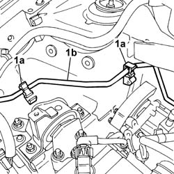
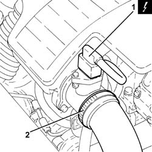
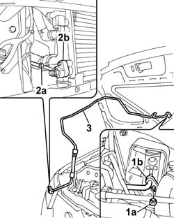
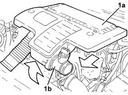
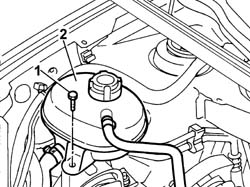
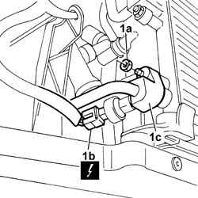
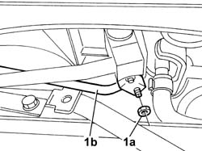
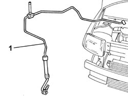

5040A60 pipe from condenser to evaporator (expansion pipe) - r+r
- Path
- Procedures > 50 AUXILIARY UNITS > 5040 AIR CONDITIONING CASING AND COMPONENTS > 5040A air conditioner coolant circuit > 5040A60 pipe from condenser to evaporator (expansion pipe) - r+r
- Kind
- repair procedure (removal / refitting; the operation number is the code)
- Applies to
- all engines; all production periods
- Interactive page
- https://sloeber94.github.io/elrnDB-fPnd/en/#/2752883
Applies to: engines: 1.1, 1.2 8v; all production periods
 Removing
Removing
 Refitting
Refitting7055B90 Left front WHEEL ARCH LINER - R.R.
7055B91 Right front WHEEL ARCH LINER - R.R.
5040A50 pipe from compressor to air conditioner condenser - r+r
5040B20 AIR CONDITIONING SYSTEM' PRESSURE LINEAR TRANSDUCER - R.R.
Undo the fixing bolt and remove the pipe mounting bracket.
1. Open the fastening clips (1a) and release the air conditioning pipe (1b).

Applies to: engines: 1.3 JTD 16v; all production periods
Removing
RefittingPlace the car on a lift.
Disconnect the battery negative terminal.
0010T84 coolant for air conditioning system dehydrate and recharge .
7055B90 Left front WHEEL ARCH LINER - R.R.
7055B91 Right front WHEEL ARCH LINER - R.R.
1. Disconnect the electrical connection from the air flow meter.
 | Name | Connector |
|---|---|---|
1 | Air flow meter | K41 |
2. Loosen the band and disconnect the the turbocharger air inlet sleeve from the rigid pipe, air flow meter side.

Applies to: engines: 1.1, 1.2 8v; all production periods
1. Undo the nut (1a) and disconnect the connector (1b) from the expansion valve.
2. Undo the nut (2a) and disconnect the connector (2b) from the condenser.
3. Remove the air conditioning pipe.

Applies to: engines: 1.3 JTD 16v; all production periods
1. Remove the air filter (1a) complete with air flow meter (1b) by releasing from the underlying pins and then from the rear fastenings.

Applies to: engines: 1.1, 1.2 8v; all production periods
Refitting
RemovingFit the air conditioning pipe in place on the expansion valve and on the condenser and tighten the fixing nuts.
Secure the pipe to the fastening clips.
Fit the pipe mounting bracket and tighten the fixing bolt.
5040B20 AIR CONDITIONING SYSTEM' PRESSURE LINEAR TRANSDUCER - R.R.
5040A50 pipe from compressor to air conditioner condenser - r+r
7055B91 Right front WHEEL ARCH LINER - R.R.
7055B90 Left front WHEEL ARCH LINER - R.R.
0010T84 coolant for air conditioning system dehydrate and recharge
Applies to: engines: 1.3 JTD 16v; all production periods
1. Undo retaining bolts.
2. Move the engine coolant expansion tank awawy from the work area.

Applies to: engines: 1.3 JTD 16v; all production periods
1044B10 fuel filter assembly - r + r or replace
1. Undo the fixing nut (1a), disconnect the electrical connection (1b) for the linear sensor and disconnect the pipe (1c).
| Name | Connector |
|---|---|---|
1b | Linear sensor (for climate control) | K120 |

Applies to: engines: 1.3 JTD 16v; all production periods
1. Undo the nut (1a) and disconnect the connector (1b) from the expansion valve.

Applies to: engines: 1.3 JTD 16v; all production periods
Release the pipe from the clips.
1. Release the pipe from the compressor to the condenser and remove it.

Applies to: engines: 1.3 JTD 16v; all production periods
Refitting
RemovingFit the air conditioning pipe in place on the expansion valve and on the condenser and tighten the fixing nuts.
Secure the pipe to the fastening clips.
Fit the engine coolant expansion tank in place and tighten the fixing bolt.
Fit the air filter complete with air flow meter in place.
Connect the air intake sleeve to the turbocharger, air flow meter side, and tighten the band.
Connect the electrical connection to the air flow meter.
| Name | Connector |
|---|---|---|
- | Air flow meter | K41 |
1044B10 fuel filter assembly - r + r or replace
7055B91 Right front WHEEL ARCH LINER - R.R.
7055B90 Left front WHEEL ARCH LINER - R.R.
0010T84 coolant for air conditioning system dehydrate and recharge
Connect the battery negative terminal.
Remove the vehicle from the lift.
Topics linked from this page (10)
- 0010T84 coolant for air conditioning system dehydrate and recharge
- 1044B10 fuel filter assembly - r + r or replace
- 4450B02 left front wheel r r
- 4450B04 right front wheel r r
- 5040A50 pipe from compressor to air conditioner condenser - r+r
- 5040B20 AIR CONDITIONING SYSTEM' PRESSURE LINEAR TRANSDUCER - R.R.
- 7055A42 FRONT GRILLE - R+R
- 7055B90 Left front WHEEL ARCH LINER - R.R.
- 7055B91 Right front WHEEL ARCH LINER - R.R.
- 7210E10 R.R. FRONT BUMPER